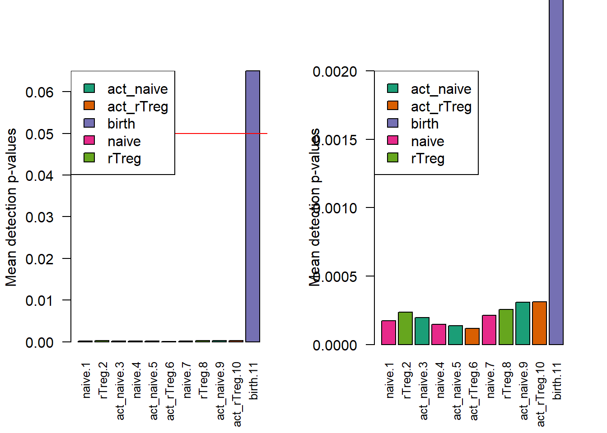
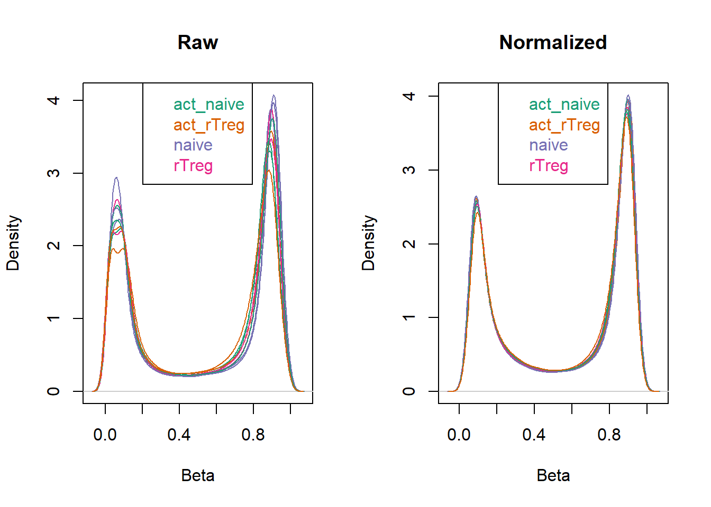
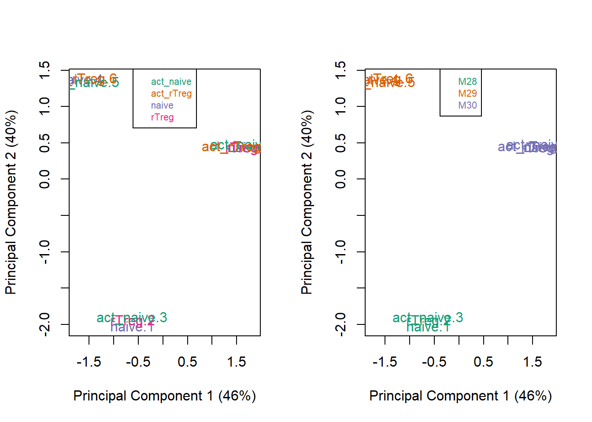
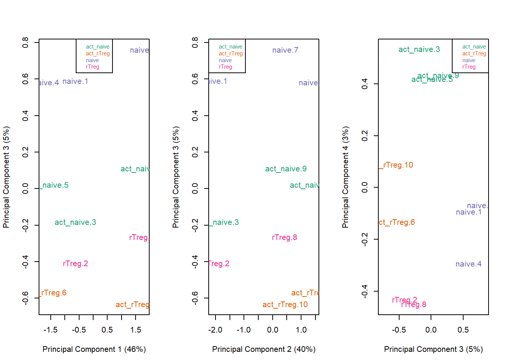
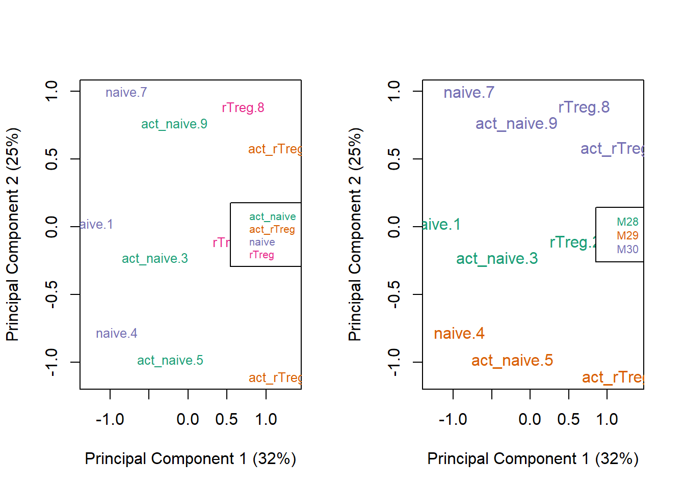
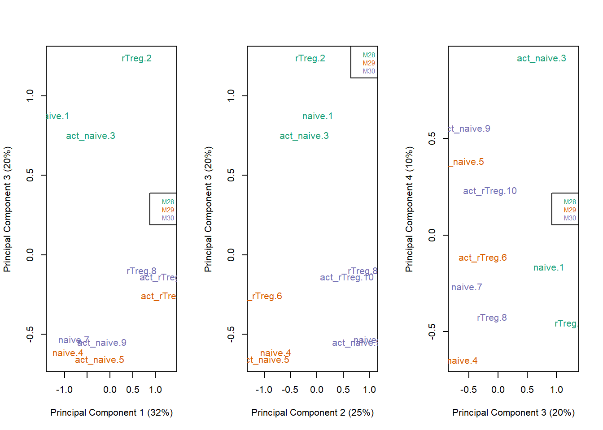
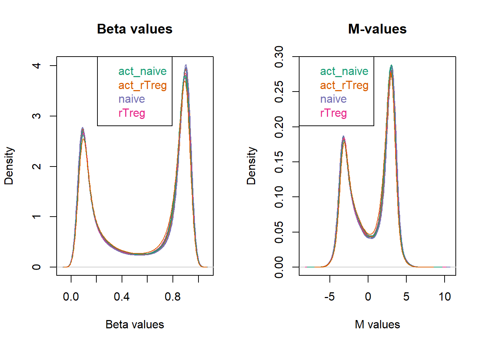
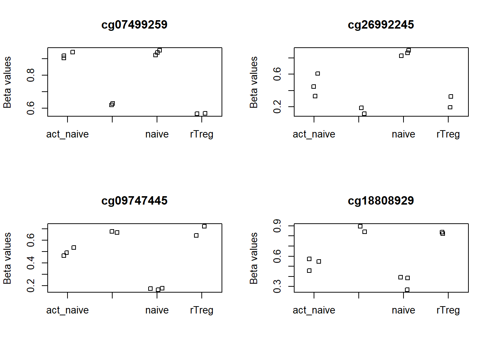
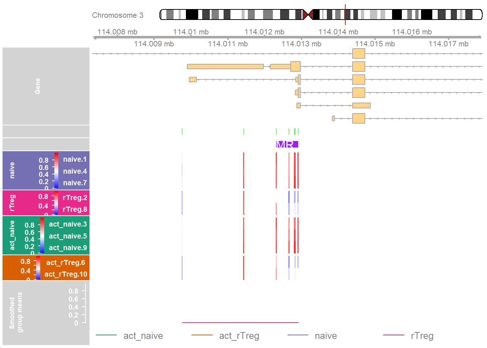
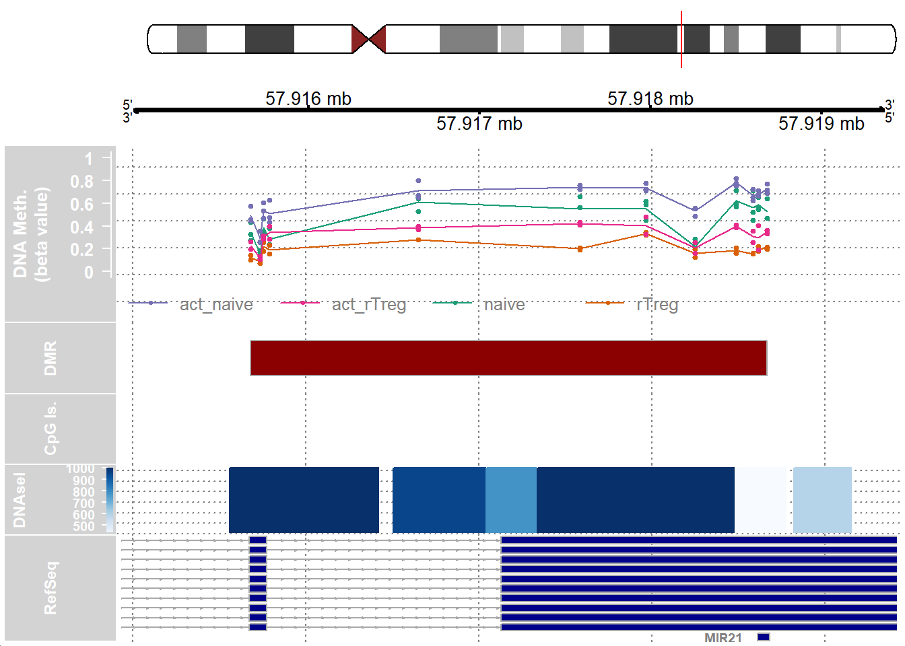

Bioshock Doc
1.1 Introduction
Epigenetics and Methylation
Epigenetics: The study of how your behaviors and environment can cause changes that affect the way your genes work.
Methylation: Methyl group gets added to DNA, at Cytosine/Guanine bases. Associated with development and disease.
Common Methylation Research
Dr. Phillip Jurmeister: Machine learning algorithm to classify sinonasal tumors
Dr. Glen E Duncan: Physical activity and epigenetic markers
Methylation Level Measurements
Two measurements for each CpG: methylated intensity(M) and unmethylated intensity(U) for determining methylation proportions
GetBetafunction inminfito get these values
1.2 Loading the Workflow Package
The is the initial step we do to get the methlation array package installed. You can read more about this workflow on the bioconductor website.
2.1 Obtain the Data
This is how we obtained the example data. It is part of the package so you do not need to install anything extra.
# Set up a path to the data directory
dataDirectory <- system.file("extdata", package = "methylationArrayAnalysis")
# List the files
list.files(dataDirectory, recursive = TRUE) [1] "48639-non-specific-probes-Illumina450k.csv"
[2] "5975827018/5975827018_R06C02_Grn.idat"
[3] "5975827018/5975827018_R06C02_Red.idat"
[4] "6264509100/6264509100_R01C01_Grn.idat"
[5] "6264509100/6264509100_R01C01_Red.idat"
[6] "6264509100/6264509100_R01C02_Grn.idat"
[7] "6264509100/6264509100_R01C02_Red.idat"
[8] "6264509100/6264509100_R02C01_Grn.idat"
[9] "6264509100/6264509100_R02C01_Red.idat"
[10] "6264509100/6264509100_R02C02_Grn.idat"
[11] "6264509100/6264509100_R02C02_Red.idat"
[12] "6264509100/6264509100_R03C01_Grn.idat"
[13] "6264509100/6264509100_R03C01_Red.idat"
[14] "6264509100/6264509100_R03C02_Grn.idat"
[15] "6264509100/6264509100_R03C02_Red.idat"
[16] "6264509100/6264509100_R04C01_Grn.idat"
[17] "6264509100/6264509100_R04C01_Red.idat"
[18] "6264509100/6264509100_R04C02_Grn.idat"
[19] "6264509100/6264509100_R04C02_Red.idat"
[20] "6264509100/6264509100_R05C01_Grn.idat"
[21] "6264509100/6264509100_R05C01_Red.idat"
[22] "6264509100/6264509100_R05C02_Grn.idat"
[23] "6264509100/6264509100_R05C02_Red.idat"
[24] "6264509100/6264509100_R06C01_Grn.idat"
[25] "6264509100/6264509100_R06C01_Red.idat"
[26] "6264509100/6264509100_R06C02_Grn.idat"
[27] "6264509100/6264509100_R06C02_Red.idat"
[28] "ageData.RData"
[29] "human_c2_v5.rdata"
[30] "model-based-cpg-islands-hg19-chr17.txt"
[31] "SampleSheet.csv"
[32] "wgEncodeRegDnaseClusteredV3chr17.bed" 2.2 Load the Data
This is where we load the example data and prepare it for our analysis.
Many methylation specific packages
Minfiandread.metharray.sheet
# Get the 450k annotation data
ann450k <- getAnnotation(IlluminaHumanMethylation450kanno.ilmn12.hg19)
head(ann450k)DataFrame with 6 rows and 33 columns
chr pos strand Name AddressA
<character> <integer> <character> <character> <character>
cg00050873 chrY 9363356 - cg00050873 32735311
cg00212031 chrY 21239348 - cg00212031 29674443
cg00213748 chrY 8148233 - cg00213748 30703409
cg00214611 chrY 15815688 - cg00214611 69792329
cg00455876 chrY 9385539 - cg00455876 27653438
cg01707559 chrY 6778695 + cg01707559 45652402
AddressB ProbeSeqA ProbeSeqB
<character> <character> <character>
cg00050873 31717405 ACAAAAAAACAACACACAAC.. ACGAAAAAACAACGCACAAC..
cg00212031 38703326 CCCAATTAACCACAAAAACT.. CCCAATTAACCGCAAAAACT..
cg00213748 36767301 TTTTAACACCTAACACCATT.. TTTTAACGCCTAACACCGTT..
cg00214611 46723459 CTAACTTCCAAACCACACTT.. CTAACTTCCGAACCGCGCTT..
cg00455876 69732350 AACTCTAAACTACCCAACAC.. AACTCTAAACTACCCGACAC..
cg01707559 64689504 ACAAATTAAAAACACTAAAA.. GCGAATTAAAAACACTAAAA..
Type NextBase Color Probe_rs Probe_maf
<character> <character> <character> <character> <numeric>
cg00050873 I A Red NA NA
cg00212031 I T Red NA NA
cg00213748 I A Red NA NA
cg00214611 I A Red NA NA
cg00455876 I A Red NA NA
cg01707559 I A Red NA NA
CpG_rs CpG_maf SBE_rs SBE_maf Islands_Name
<character> <numeric> <character> <numeric> <character>
cg00050873 NA NA NA NA chrY:9363680-9363943
cg00212031 NA NA NA NA chrY:21238448-21240005
cg00213748 NA NA NA NA chrY:8147877-8148210
cg00214611 NA NA NA NA chrY:15815488-15815779
cg00455876 NA NA NA NA chrY:9385471-9385777
cg01707559 NA NA NA NA chrY:6778574-6780028
Relation_to_Island Forward_Sequence SourceSeq
<character> <character> <character>
cg00050873 N_Shore TATCTCTGTCTGGCGAGGAG.. CGGGGTCCACCCACTCCAAA..
cg00212031 Island CCATTGGCCCGCCCCAGTTG.. CGCACGTCTTCCCGACCGCA..
cg00213748 S_Shore TCTGTGGGACCATTTTAACG.. CGCCCCCTCCTGCAGAACCT..
cg00214611 Island GCGCCGGCAGGACTAGCTTC.. CGCCCGCGCCACACTGCAGC..
cg00455876 Island CGCGTGTGCCTGGACTCTGA.. GACTCTGAGCTACCCGGCAC..
cg01707559 Island AGCGGCCGCTCCCAGTGGTG.. CGCCCTCTGTCGCTGCAGCC..
Random_Loci Methyl27_Loci UCSC_RefGene_Name UCSC_RefGene_Accession
<character> <character> <character> <character>
cg00050873 TSPY4;FAM197Y2 NM_001164471;NR_001553
cg00212031 TTTY14 NR_001543
cg00213748
cg00214611 TMSB4Y;TMSB4Y NM_004202;NM_004202
cg00455876
cg01707559 TBL1Y;TBL1Y;TBL1Y NM_134259;NM_033284;..
UCSC_RefGene_Group Phantom DMR Enhancer
<character> <character> <character> <character>
cg00050873 Body;TSS1500
cg00212031 TSS200
cg00213748
cg00214611 1stExon;5'UTR
cg00455876
cg01707559 TSS200;TSS200;TSS200
HMM_Island Regulatory_Feature_Name Regulatory_Feature_Group
<character> <character> <character>
cg00050873 Y:9973136-9976273
cg00212031 Y:19697854-19699393
cg00213748 Y:8207555-8208234
cg00214611 Y:14324883-14325218 Y:15815422-15815706 Promoter_Associated_..
cg00455876 Y:9993394-9995882
cg01707559 Y:6838022-6839951
DHS
<character>
cg00050873
cg00212031
cg00213748
cg00214611
cg00455876
cg01707559 # Read in the sample sheet for the experiment
targets <- read.metharray.sheet(dataDirectory, pattern="SampleSheet.csv")[read.metharray.sheet] Found the following CSV files:[1] "C:/Users/legoj/AppData/Local/R/win-library/4.2/methylationArrayAnalysis/extdata/SampleSheet.csv"targets Sample_Name Sample_Well Sample_Source Sample_Group Sample_Label Pool_ID
1 1 A1 M28 naive naive <NA>
2 2 B1 M28 rTreg rTreg <NA>
3 3 C1 M28 act_naive act_naive <NA>
4 4 D1 M29 naive naive <NA>
5 5 E1 M29 act_naive act_naive <NA>
6 6 F1 M29 act_rTreg act_rTreg <NA>
7 7 G1 M30 naive naive <NA>
8 8 H1 M30 rTreg rTreg <NA>
9 9 A2 M30 act_naive act_naive <NA>
10 10 B2 M30 act_rTreg act_rTreg <NA>
11 11 H06 VICS-72098-18-B birth birth <NA>
Array Slide
1 R01C01 6264509100
2 R02C01 6264509100
3 R03C01 6264509100
4 R04C01 6264509100
5 R05C01 6264509100
6 R06C01 6264509100
7 R01C02 6264509100
8 R02C02 6264509100
9 R03C02 6264509100
10 R04C02 6264509100
11 R06C02 5975827018
Basename
1 C:/Users/legoj/AppData/Local/R/win-library/4.2/methylationArrayAnalysis/extdata/6264509100/6264509100_R01C01
2 C:/Users/legoj/AppData/Local/R/win-library/4.2/methylationArrayAnalysis/extdata/6264509100/6264509100_R02C01
3 C:/Users/legoj/AppData/Local/R/win-library/4.2/methylationArrayAnalysis/extdata/6264509100/6264509100_R03C01
4 C:/Users/legoj/AppData/Local/R/win-library/4.2/methylationArrayAnalysis/extdata/6264509100/6264509100_R04C01
5 C:/Users/legoj/AppData/Local/R/win-library/4.2/methylationArrayAnalysis/extdata/6264509100/6264509100_R05C01
6 C:/Users/legoj/AppData/Local/R/win-library/4.2/methylationArrayAnalysis/extdata/6264509100/6264509100_R06C01
7 C:/Users/legoj/AppData/Local/R/win-library/4.2/methylationArrayAnalysis/extdata/6264509100/6264509100_R01C02
8 C:/Users/legoj/AppData/Local/R/win-library/4.2/methylationArrayAnalysis/extdata/6264509100/6264509100_R02C02
9 C:/Users/legoj/AppData/Local/R/win-library/4.2/methylationArrayAnalysis/extdata/6264509100/6264509100_R03C02
10 C:/Users/legoj/AppData/Local/R/win-library/4.2/methylationArrayAnalysis/extdata/6264509100/6264509100_R04C02
11 C:/Users/legoj/AppData/Local/R/win-library/4.2/methylationArrayAnalysis/extdata/5975827018/5975827018_R06C02# Read in the raw data from the IDAT files
rgSet <- read.metharray.exp(targets=targets)
rgSetclass: RGChannelSet
dim: 622399 11
metadata(0):
assays(2): Green Red
rownames(622399): 10600313 10600322 ... 74810490 74810492
rowData names(0):
colnames(11): 6264509100_R01C01 6264509100_R02C01 ... 6264509100_R04C02
5975827018_R06C02
colData names(10): Sample_Name Sample_Well ... Basename filenames
Annotation
array: IlluminaHumanMethylation450k
annotation: ilmn12.hg19# Give the samples descriptive names
targets$ID <- paste(targets$Sample_Group,targets$Sample_Name,sep=".")
sampleNames(rgSet) <- targets$ID
rgSetclass: RGChannelSet
dim: 622399 11
metadata(0):
assays(2): Green Red
rownames(622399): 10600313 10600322 ... 74810490 74810492
rowData names(0):
colnames(11): naive.1 rTreg.2 ... act_rTreg.10 birth.11
colData names(10): Sample_Name Sample_Well ... Basename filenames
Annotation
array: IlluminaHumanMethylation450k
annotation: ilmn12.hg192.3 Quality Control
This is where we gauge the quality of our data and remove parts that aren’t good enough to use.
P-value detection through
detPfunction.Plot the mean
QcReport function in
minfi
# Calculate the detection p-values
detP <- detectionP(rgSet)
head(detP) naive.1 rTreg.2 act_naive.3 naive.4 act_naive.5
cg00050873 0.000000e+00 0.000000e+00 0.000000e+00 0.00000e+00 0.000000e+00
cg00212031 0.000000e+00 0.000000e+00 0.000000e+00 0.00000e+00 0.000000e+00
cg00213748 2.139652e-88 4.213813e-31 1.181802e-12 1.29802e-47 8.255482e-15
cg00214611 0.000000e+00 0.000000e+00 0.000000e+00 0.00000e+00 0.000000e+00
cg00455876 1.400696e-234 9.349236e-111 4.272105e-90 0.00000e+00 3.347145e-268
cg01707559 0.000000e+00 0.000000e+00 0.000000e+00 0.00000e+00 0.000000e+00
act_rTreg.6 naive.7 rTreg.8 act_naive.9 act_rTreg.10
cg00050873 0.000000e+00 0.00000e+00 0.000000e+00 0.000000e+00 0.000000e+00
cg00212031 0.000000e+00 0.00000e+00 0.000000e+00 0.000000e+00 0.000000e+00
cg00213748 2.592206e-23 1.16160e-28 1.469801e-05 1.543654e-21 1.365951e-08
cg00214611 0.000000e+00 0.00000e+00 0.000000e+00 0.000000e+00 0.000000e+00
cg00455876 4.690740e-308 1.08647e-219 5.362780e-178 0.000000e+00 7.950724e-295
cg01707559 0.000000e+00 0.00000e+00 0.000000e+00 0.000000e+00 0.000000e+00
birth.11
cg00050873 0.000000e+00
cg00212031 2.638199e-237
cg00213748 6.735224e-01
cg00214611 7.344451e-01
cg00455876 4.403634e-174
cg01707559 0.000000e+00# Examine mean detection p-values across all samples to identify any failed samples
pal <- brewer.pal(8,"Dark2")
par(mfrow=c(1,2))
barplot(colMeans(detP), col=pal[factor(targets$Sample_Group)], las=2,
cex.names=0.8, ylab="Mean detection p-values")
abline(h=0.05,col="red")
legend("topleft", legend=levels(factor(targets$Sample_Group)), fill=pal,
bg="white")
barplot(colMeans(detP), col=pal[factor(targets$Sample_Group)], las=2,
cex.names=0.8, ylim=c(0,0.002), ylab="Mean detection p-values")
abline(h=0.05,col="red")
legend("topleft", legend=levels(factor(targets$Sample_Group)), fill=pal,
bg="white")
Warning in type.convert.default(X[[i]], ...): 'as.is' should be specified by the
caller; using TRUE
Warning in type.convert.default(X[[i]], ...): 'as.is' should be specified by the
caller; using TRUE
Warning in type.convert.default(X[[i]], ...): 'as.is' should be specified by the
caller; using TRUE
Warning in type.convert.default(X[[i]], ...): 'as.is' should be specified by the
caller; using TRUE
Warning in type.convert.default(X[[i]], ...): 'as.is' should be specified by the
caller; using TRUE
Warning in type.convert.default(X[[i]], ...): 'as.is' should be specified by the
caller; using TRUE
Warning in type.convert.default(X[[i]], ...): 'as.is' should be specified by the
caller; using TRUE
Warning in type.convert.default(X[[i]], ...): 'as.is' should be specified by the
caller; using TRUE
Warning in type.convert.default(X[[i]], ...): 'as.is' should be specified by the
caller; using TRUE
Warning in type.convert.default(X[[i]], ...): 'as.is' should be specified by the
caller; using TRUE
Warning in type.convert.default(X[[i]], ...): 'as.is' should be specified by the
caller; using TRUE
Warning in type.convert.default(X[[i]], ...): 'as.is' should be specified by the
caller; using TRUE
Warning in type.convert.default(X[[i]], ...): 'as.is' should be specified by the
caller; using TRUE
Warning in type.convert.default(X[[i]], ...): 'as.is' should be specified by the
caller; using TRUE
Warning in type.convert.default(X[[i]], ...): 'as.is' should be specified by the
caller; using TRUE
Warning in type.convert.default(X[[i]], ...): 'as.is' should be specified by the
caller; using TRUE
Warning in type.convert.default(X[[i]], ...): 'as.is' should be specified by the
caller; using TRUE
Warning in type.convert.default(X[[i]], ...): 'as.is' should be specified by the
caller; using TRUE
Warning in type.convert.default(X[[i]], ...): 'as.is' should be specified by the
caller; using TRUE
Warning in type.convert.default(X[[i]], ...): 'as.is' should be specified by the
caller; using TRUE
Warning in type.convert.default(X[[i]], ...): 'as.is' should be specified by the
caller; using TRUE
Warning in type.convert.default(X[[i]], ...): 'as.is' should be specified by the
caller; using TRUE
Warning in type.convert.default(X[[i]], ...): 'as.is' should be specified by the
caller; using TRUE
Warning in type.convert.default(X[[i]], ...): 'as.is' should be specified by the
caller; using TRUE
Warning in type.convert.default(X[[i]], ...): 'as.is' should be specified by the
caller; using TRUE
Warning in type.convert.default(X[[i]], ...): 'as.is' should be specified by the
caller; using TRUE
Warning in type.convert.default(X[[i]], ...): 'as.is' should be specified by the
caller; using TRUE
Warning in type.convert.default(X[[i]], ...): 'as.is' should be specified by the
caller; using TRUE
Warning in type.convert.default(X[[i]], ...): 'as.is' should be specified by the
caller; using TRUE
Warning in type.convert.default(X[[i]], ...): 'as.is' should be specified by the
caller; using TRUE
Warning in type.convert.default(X[[i]], ...): 'as.is' should be specified by the
caller; using TRUE
Warning in type.convert.default(X[[i]], ...): 'as.is' should be specified by the
caller; using TRUE
Warning in type.convert.default(X[[i]], ...): 'as.is' should be specified by the
caller; using TRUE
Warning in type.convert.default(X[[i]], ...): 'as.is' should be specified by the
caller; using TRUEpng
2 # Remove poor quality samples
keep <- colMeans(detP) < 0.05
rgSet <- rgSet[,keep]
rgSetclass: RGChannelSet
dim: 622399 10
metadata(0):
assays(2): Green Red
rownames(622399): 10600313 10600322 ... 74810490 74810492
rowData names(0):
colnames(10): naive.1 rTreg.2 ... act_naive.9 act_rTreg.10
colData names(10): Sample_Name Sample_Well ... Basename filenames
Annotation
array: IlluminaHumanMethylation450k
annotation: ilmn12.hg19# Remove poor quality samples from targets data
targets <- targets[keep,]
targets[,1:5] Sample_Name Sample_Well Sample_Source Sample_Group Sample_Label
1 1 A1 M28 naive naive
2 2 B1 M28 rTreg rTreg
3 3 C1 M28 act_naive act_naive
4 4 D1 M29 naive naive
5 5 E1 M29 act_naive act_naive
6 6 F1 M29 act_rTreg act_rTreg
7 7 G1 M30 naive naive
8 8 H1 M30 rTreg rTreg
9 9 A2 M30 act_naive act_naive
10 10 B2 M30 act_rTreg act_rTreg# Remove poor quality samples from detection p-value table
detP <- detP[,keep]
dim(detP)[1] 485512 102.4 Normalization
Another process of data treatment to help eliminate unwanted variability between samples.
Dealing with variation within data
Many different methods even within just
minfipreprocessFunnormfor global methylation differencesQuantile is more suited samples with no global differences
# Normalize the data; this results in a GenomicRatioSet object
mSetSq <- preprocessQuantile(rgSet) [preprocessQuantile] Mapping to genome.Warning in .getSex(CN = CN, xIndex = xIndex, yIndex = yIndex, cutoff = cutoff):
An inconsistency was encountered while determining sex. One possibility is
that only one sex is present. We recommend further checks, for example with the
plotSex function.[preprocessQuantile] Fixing outliers.[preprocessQuantile] Quantile normalizing.# Create a MethylSet object from the raw data for plotting
mSetRaw <- preprocessRaw(rgSet)# Visualise what the data looks like before and after normalization
par(mfrow=c(1,2))
densityPlot(rgSet, sampGroups=targets$Sample_Group,main="Raw", legend=FALSE)
legend("top", legend = levels(factor(targets$Sample_Group)),
text.col=brewer.pal(8,"Dark2"))
densityPlot(getBeta(mSetSq), sampGroups=targets$Sample_Group,
main="Normalized", legend=FALSE)
legend("top", legend = levels(factor(targets$Sample_Group)),
text.col=brewer.pal(8,"Dark2"))
2.5 Data Exploration
Visualizing data is a key component of data exploration and can make it easier to understand results. In this workflow, we used multi-dimensional scaling plots (MDS). MDS plots are based on principal components analysis (PCA) and look at the similarities and differences between the various samples. Samples that are more like each other should cluster together, and samples that are different should be further apart on the plot.
Note: PCA is a data reduction method that reduces the number of variables that account for the variance in the data and makes it easier to interpret large datasets.
To plot this we used the plotMDS function, a built-in function in R to handle this kind of data. It appears like ggplot2 with the ability to alter specific aspects of the plot.
# MDS plots to look at largest sources of variation
par(mfrow=c(1,2))
plotMDS(getM(mSetSq), top=1000, gene.selection="common",
col=pal[factor(targets$Sample_Group)])
legend("top", legend=levels(factor(targets$Sample_Group)), text.col=pal,
bg="white", cex=0.7)
plotMDS(getM(mSetSq), top=1000, gene.selection="common",
col=pal[factor(targets$Sample_Source)])
legend("top", legend=levels(factor(targets$Sample_Source)), text.col=pal,
bg="white", cex=0.7)
# Examine higher dimensions to look at other sources of variation
par(mfrow=c(1,3))
plotMDS(getM(mSetSq), top=1000, gene.selection="common",
col=pal[factor(targets$Sample_Group)], dim=c(1,3))
legend("top", legend=levels(factor(targets$Sample_Group)), text.col=pal,
cex=0.7, bg="white")
plotMDS(getM(mSetSq), top=1000, gene.selection="common",
col=pal[factor(targets$Sample_Group)], dim=c(2,3))
legend("topleft", legend=levels(factor(targets$Sample_Group)), text.col=pal,
cex=0.7, bg="white")
plotMDS(getM(mSetSq), top=1000, gene.selection="common",
col=pal[factor(targets$Sample_Group)], dim=c(3,4))
legend("topright", legend=levels(factor(targets$Sample_Group)), text.col=pal,
cex=0.7, bg="white")
2.6 Filtering
Like what we did with Trimmomatic when working with databases, this step requires that we filter out DNA probes that interfere with our analysis. This is because the signal from these probes is unreliable and removing allows us to perform fewer statistical tests.
In this step, we begin by ordering the probes, then removing any probes that have failed in one or more samples.
While this dataset is entirely composed of male donors, filtering probes from both X and Y chromosomes can be done.
Similarly, single nucleotide polymorphisms (SNPs) - the most common type of genetic variation among people – can also be filtered out of probes using the function minifi.
After filtering we can re-examined the data using MDS plots to see if the relationship between samples changed. In this workflow, you can see that removing the SNP-affected CpGs probes from the data changes the sample clustering in the MDS plots.
We then calculated the M-values, a measure of the number of molecules that are methylated or unmethylated and the beta value which roughly represents the percentage of a site that is methylated (Du et al, 2010).
# Ensure probes are in the same order in the mSetSq and detP objects
detP <- detP[match(featureNames(mSetSq),rownames(detP)),]
# Remove any probes that have failed in one or more samples
keep <- rowSums(detP < 0.01) == ncol(mSetSq)
table(keep)keep
FALSE TRUE
977 484535 mSetSqFlt <- mSetSq[keep,]
mSetSqFltclass: GenomicRatioSet
dim: 484535 10
metadata(0):
assays(2): M CN
rownames(484535): cg13869341 cg14008030 ... cg08265308 cg14273923
rowData names(0):
colnames(10): naive.1 rTreg.2 ... act_naive.9 act_rTreg.10
colData names(13): Sample_Name Sample_Well ... yMed predictedSex
Annotation
array: IlluminaHumanMethylation450k
annotation: ilmn12.hg19
Preprocessing
Method: Raw (no normalization or bg correction)
minfi version: 1.44.0
Manifest version: 0.4.0# If your data includes males and females, remove probes on the sex chromosomes
keep <- !(featureNames(mSetSqFlt) %in% ann450k$Name[ann450k$chr %in%
c("chrX","chrY")])
table(keep)keep
FALSE TRUE
11608 472927 mSetSqFlt <- mSetSqFlt[keep,]# Remove probes with SNPs at CpG site
mSetSqFlt <- dropLociWithSnps(mSetSqFlt)
mSetSqFltclass: GenomicRatioSet
dim: 455924 10
metadata(0):
assays(2): M CN
rownames(455924): cg13869341 cg14008030 ... cg07660283 cg09226288
rowData names(0):
colnames(10): naive.1 rTreg.2 ... act_naive.9 act_rTreg.10
colData names(13): Sample_Name Sample_Well ... yMed predictedSex
Annotation
array: IlluminaHumanMethylation450k
annotation: ilmn12.hg19
Preprocessing
Method: Raw (no normalization or bg correction)
minfi version: 1.44.0
Manifest version: 0.4.0# Exclude cross reactive probes
xReactiveProbes <- read.csv(file=paste(dataDirectory,
"48639-non-specific-probes-Illumina450k.csv",
sep="/"), stringsAsFactors=FALSE)
keep <- !(featureNames(mSetSqFlt) %in% xReactiveProbes$TargetID)
table(keep)keep
FALSE TRUE
26527 429397 mSetSqFlt <- mSetSqFlt[keep,]
mSetSqFltclass: GenomicRatioSet
dim: 429397 10
metadata(0):
assays(2): M CN
rownames(429397): cg13869341 cg24669183 ... cg19565306 cg09226288
rowData names(0):
colnames(10): naive.1 rTreg.2 ... act_naive.9 act_rTreg.10
colData names(13): Sample_Name Sample_Well ... yMed predictedSex
Annotation
array: IlluminaHumanMethylation450k
annotation: ilmn12.hg19
Preprocessing
Method: Raw (no normalization or bg correction)
minfi version: 1.44.0
Manifest version: 0.4.0par(mfrow=c(1,2))
plotMDS(getM(mSetSqFlt), top=1000, gene.selection="common",
col=pal[factor(targets$Sample_Group)], cex=0.8)
legend("right", legend=levels(factor(targets$Sample_Group)), text.col=pal,
cex=0.65, bg="white")
plotMDS(getM(mSetSqFlt), top=1000, gene.selection="common",
col=pal[factor(targets$Sample_Source)])
legend("right", legend=levels(factor(targets$Sample_Source)), text.col=pal,
cex=0.7, bg="white")
par(mfrow=c(1,3))
# Examine higher dimensions to look at other sources of variation
plotMDS(getM(mSetSqFlt), top=1000, gene.selection="common",
col=pal[factor(targets$Sample_Source)], dim=c(1,3))
legend("right", legend=levels(factor(targets$Sample_Source)), text.col=pal,
cex=0.7, bg="white")
plotMDS(getM(mSetSqFlt), top=1000, gene.selection="common",
col=pal[factor(targets$Sample_Source)], dim=c(2,3))
legend("topright", legend=levels(factor(targets$Sample_Source)), text.col=pal,
cex=0.7, bg="white")
plotMDS(getM(mSetSqFlt), top=1000, gene.selection="common",
col=pal[factor(targets$Sample_Source)], dim=c(3,4))
legend("right", legend=levels(factor(targets$Sample_Source)), text.col=pal,
cex=0.7, bg="white")
# Calculate M-values for statistical analysis
mVals <- getM(mSetSqFlt)
head(mVals[,1:5]) naive.1 rTreg.2 act_naive.3 naive.4 act_naive.5
cg13869341 2.421276 2.515948 2.165745 2.286314 2.109441
cg24669183 2.169414 2.235964 2.280734 1.632309 2.184435
cg15560884 1.761176 1.577578 1.597503 1.777486 1.764999
cg01014490 -3.504268 -3.825119 -5.384735 -4.537864 -4.296526
cg17505339 3.082191 3.924931 4.163206 3.255373 3.654134
cg11954957 1.546401 1.912204 1.727910 2.441267 1.618331bVals <- getBeta(mSetSqFlt)
head(bVals[,1:5]) naive.1 rTreg.2 act_naive.3 naive.4 act_naive.5
cg13869341 0.84267937 0.85118462 0.8177504 0.82987650 0.81186174
cg24669183 0.81812908 0.82489238 0.8293297 0.75610281 0.81967323
cg15560884 0.77219626 0.74903910 0.7516263 0.77417882 0.77266205
cg01014490 0.08098986 0.06590459 0.0233755 0.04127262 0.04842397
cg17505339 0.89439216 0.93822870 0.9471357 0.90520570 0.92641305
cg11954957 0.74495496 0.79008516 0.7681146 0.84450764 0.75431167par(mfrow=c(1,2))
densityPlot(bVals, sampGroups=targets$Sample_Group, main="Beta values",
legend=FALSE, xlab="Beta values")
legend("top", legend = levels(factor(targets$Sample_Group)),
text.col=brewer.pal(8,"Dark2"))
densityPlot(mVals, sampGroups=targets$Sample_Group, main="M-values",
legend=FALSE, xlab="M values")
legend("topleft", legend = levels(factor(targets$Sample_Group)),
text.col=brewer.pal(8,"Dark2"))
2.7 Probe-Wise Differential Methylation Analysis
The focus of this dataset is discovering differentially methylated probes between different cell types. This style of analysis is called a paired analysis; differences between cell types are calculated within each individual, and then these differences are averaged across individuals to determine whether there is an overall significant difference in the mean methylation level for each CpG site.
We were interested in pairwise comparisons between the four cell types. In this workflow, we analyzed the M-values in limma. This allowed us to obtain moderated t-statistics and associated p-values for each CpG site, sites where a cytosine is followed by guanine.
Based on a false discovery rate of 5%, we found 3021 significantly differentially methylated CpGs in the naïve vs rTreg comparison. The rTreg/ act_rTreg did not show any significant differential methylation.
# This is the factor of interest
cellType <- factor(targets$Sample_Group)
# This is the individual effect that we need to account for
individual <- factor(targets$Sample_Source)
# Use the above to create a design matrix
design <- model.matrix(~0+cellType+individual, data=targets)
colnames(design) <- c(levels(cellType),levels(individual)[-1])
# Fit the linear model
fit <- lmFit(mVals, design)
# create a contrast matrix for specific comparisons
contMatrix <- makeContrasts(naive-rTreg,
naive-act_naive,
rTreg-act_rTreg,
act_naive-act_rTreg,
levels=design)
contMatrix Contrasts
Levels naive - rTreg naive - act_naive rTreg - act_rTreg
act_naive 0 -1 0
act_rTreg 0 0 -1
naive 1 1 0
rTreg -1 0 1
M29 0 0 0
M30 0 0 0
Contrasts
Levels act_naive - act_rTreg
act_naive 1
act_rTreg -1
naive 0
rTreg 0
M29 0
M30 0# fit the contrasts
fit2 <- contrasts.fit(fit, contMatrix)
fit2 <- eBayes(fit2)
# look at the numbers of DM CpGs at FDR < 0.05
summary(decideTests(fit2)) naive - rTreg naive - act_naive rTreg - act_rTreg act_naive - act_rTreg
Down 1606 408 0 552
NotSig 426397 428759 429397 427943
Up 1394 230 0 902# Get the table of results for the first contrast (naive - rTreg)
ann450kSub <- ann450k[match(rownames(mVals),ann450k$Name),
c(1:4,12:19,24:ncol(ann450k))]
DMPs <- topTable(fit2, num=Inf, coef=1, genelist=ann450kSub)
head(DMPs) chr pos strand Name Probe_rs Probe_maf CpG_rs CpG_maf
cg07499259 chr1 12188502 + cg07499259 <NA> NA <NA> NA
cg26992245 chr8 29848579 - cg26992245 <NA> NA <NA> NA
cg09747445 chr15 70387268 - cg09747445 <NA> NA <NA> NA
cg18808929 chr8 61825469 - cg18808929 <NA> NA <NA> NA
cg25015733 chr2 99342986 - cg25015733 <NA> NA <NA> NA
cg21179654 chr3 114057297 + cg21179654 <NA> NA <NA> NA
SBE_rs SBE_maf Islands_Name Relation_to_Island
cg07499259 <NA> NA OpenSea
cg26992245 <NA> NA OpenSea
cg09747445 <NA> NA chr15:70387929-70393206 N_Shore
cg18808929 <NA> NA chr8:61822358-61823028 S_Shelf
cg25015733 <NA> NA chr2:99346882-99348177 N_Shelf
cg21179654 <NA> NA OpenSea
UCSC_RefGene_Name
cg07499259 TNFRSF8;TNFRSF8
cg26992245
cg09747445 TLE3;TLE3;TLE3
cg18808929
cg25015733 MGAT4A
cg21179654 ZBTB20;ZBTB20;ZBTB20;ZBTB20;ZBTB20;ZBTB20;ZBTB20
UCSC_RefGene_Accession
cg07499259 NM_152942;NM_001243
cg26992245
cg09747445 NM_001105192;NM_020908;NM_005078
cg18808929
cg25015733 NM_012214
cg21179654 NM_001164343;NM_001164346;NM_001164345;NM_001164342;NM_001164344;NM_001164347;NM_015642
UCSC_RefGene_Group Phantom DMR Enhancer
cg07499259 5'UTR;Body
cg26992245 TRUE
cg09747445 Body;Body;Body
cg18808929 TRUE
cg25015733 5'UTR
cg21179654 3'UTR;3'UTR;3'UTR;3'UTR;3'UTR;3'UTR;3'UTR
HMM_Island Regulatory_Feature_Name
cg07499259 1:12111023-12111225
cg26992245
cg09747445
cg18808929
cg25015733
cg21179654 3:114057192-114057775
Regulatory_Feature_Group DHS logFC AveExpr t
cg07499259 3.654104 2.46652171 18.77533
cg26992245 4.450696 -0.09180715 18.35830
cg09747445 -3.337299 -0.25201484 -18.29169
cg18808929 -2.990263 0.77522878 -17.95543
cg25015733 -3.054336 0.83280190 -17.37376
cg21179654 Unclassified_Cell_type_specific 2.859016 1.32460816 17.33058
P.Value adj.P.Val B
cg07499259 7.038346e-08 0.005176247 7.491458
cg26992245 8.386780e-08 0.005176247 7.394212
cg09747445 8.627940e-08 0.005176247 7.378282
cg18808929 9.970727e-08 0.005176247 7.296126
cg25015733 1.288536e-07 0.005176247 7.146883
cg21179654 1.313725e-07 0.005176247 7.135430write.table(DMPs, file="DMPs.csv", sep=",", row.names=FALSE)# Plot the top 4 most significantly differentially methylated CpGs
par(mfrow=c(2,2))
sapply(rownames(DMPs)[1:4], function(cpg){
plotCpg(bVals, cpg=cpg, pheno=targets$Sample_Group, ylab = "Beta values")
})
$cg07499259
NULL
$cg26992245
NULL
$cg09747445
NULL
$cg18808929
NULL2.8 Differential Methylation Analysis of Regions
Our probe-wise differential methylation analysis can be valuable, but it is not alone sufficient if we want to look at entire regions. Several Bioconductor packages exist that can help obtain a broader overview of differential methylated regions (DMRs). This workflow utilizes the dmrcate Bioconductor package. The final figure maps the methylated regions against chromosome length and the known genes.
myAnnotation <- cpg.annotate(object = mVals, datatype = "array", what = "M",
analysis.type = "differential", design = design,
contrasts = TRUE, cont.matrix = contMatrix,
coef = "naive - rTreg", arraytype = "450K")Your contrast returned 3000 individually significant probes. We recommend the default setting of pcutoff in dmrcate().str(myAnnotation)Formal class 'CpGannotated' [package "DMRcate"] with 1 slot
..@ ranges:Formal class 'GRanges' [package "GenomicRanges"] with 7 slots
.. .. ..@ seqnames :Formal class 'Rle' [package "S4Vectors"] with 4 slots
.. .. .. .. ..@ values : Factor w/ 22 levels "chr1","chr2",..: 1 2 3 4 5 6 7 8 9 10 ...
.. .. .. .. ..@ lengths : int [1:22] 42733 31682 23086 18431 22093 32652 26437 18956 8961 22163 ...
.. .. .. .. ..@ elementMetadata: NULL
.. .. .. .. ..@ metadata : list()
.. .. ..@ ranges :Formal class 'IRanges' [package "IRanges"] with 6 slots
.. .. .. .. ..@ start : int [1:429397] 15865 534242 710097 714177 720865 758829 763119 779995 805102 805338 ...
.. .. .. .. ..@ width : int [1:429397] 1 1 1 1 1 1 1 1 1 1 ...
.. .. .. .. ..@ NAMES : chr [1:429397] "cg13869341" "cg24669183" "cg15560884" "cg01014490" ...
.. .. .. .. ..@ elementType : chr "ANY"
.. .. .. .. ..@ elementMetadata: NULL
.. .. .. .. ..@ metadata : list()
.. .. ..@ strand :Formal class 'Rle' [package "S4Vectors"] with 4 slots
.. .. .. .. ..@ values : Factor w/ 3 levels "+","-","*": 3
.. .. .. .. ..@ lengths : int 429397
.. .. .. .. ..@ elementMetadata: NULL
.. .. .. .. ..@ metadata : list()
.. .. ..@ seqinfo :Formal class 'Seqinfo' [package "GenomeInfoDb"] with 4 slots
.. .. .. .. ..@ seqnames : chr [1:22] "chr1" "chr2" "chr3" "chr4" ...
.. .. .. .. ..@ seqlengths : int [1:22] NA NA NA NA NA NA NA NA NA NA ...
.. .. .. .. ..@ is_circular: logi [1:22] NA NA NA NA NA NA ...
.. .. .. .. ..@ genome : chr [1:22] NA NA NA NA ...
.. .. ..@ elementMetadata:Formal class 'DFrame' [package "S4Vectors"] with 6 slots
.. .. .. .. ..@ rownames : NULL
.. .. .. .. ..@ nrows : int 429397
.. .. .. .. ..@ elementType : chr "ANY"
.. .. .. .. ..@ elementMetadata: NULL
.. .. .. .. ..@ metadata : list()
.. .. .. .. ..@ listData :List of 4
.. .. .. .. .. ..$ stat : num [1:429397] 0.049 -2.0817 0.7734 -0.0304 -0.7651 ...
.. .. .. .. .. ..$ diff : num [1:429397] 0.00039 -0.04534 0.01594 0.00251 -0.00869 ...
.. .. .. .. .. ..$ ind.fdr: num [1:429397] 0.994 0.562 0.871 0.997 0.873 ...
.. .. .. .. .. ..$ is.sig : logi [1:429397] FALSE FALSE FALSE FALSE FALSE FALSE ...
.. .. ..@ elementType : chr "ANY"
.. .. ..@ metadata : list()#endif /* NEWSTUFF */
DMRs <- dmrcate(myAnnotation, lambda=1000, C=2)Fitting chr1...Fitting chr2...Fitting chr3...Fitting chr4...Fitting chr5...Fitting chr6...Fitting chr7...Fitting chr8...Fitting chr9...Fitting chr10...Fitting chr11...Fitting chr12...Fitting chr13...Fitting chr14...Fitting chr15...Fitting chr16...Fitting chr17...Fitting chr18...Fitting chr19...Fitting chr20...Fitting chr21...Fitting chr22...Demarcating regions...Done!results.ranges <- extractRanges(DMRs)snapshotDate(): 2022-10-31see ?DMRcatedata and browseVignettes('DMRcatedata') for documentationloading from cacheresults.rangesGRanges object with 538 ranges and 8 metadata columns:
seqnames ranges strand | no.cpgs min_smoothed_fdr
<Rle> <IRanges> <Rle> | <integer> <numeric>
[1] chr17 57915665-57918682 * | 12 2.28354e-91
[2] chr3 114012316-114012912 * | 5 3.03677e-181
[3] chr18 21452730-21453131 * | 7 1.54955e-115
[4] chr17 74639731-74640078 * | 6 3.26482e-90
[5] chr15 29212889-29213860 * | 7 4.26302e-98
... ... ... ... . ... ...
[534] chr6 31832650-31833452 * | 18 1.66423e-28
[535] chr6 28830789-28831683 * | 14 8.41531e-63
[536] chr6 144385771-144387124 * | 22 1.30124e-60
[537] chr2 43454687-43455103 * | 15 8.51286e-26
[538] chr2 25141532-25142229 * | 8 2.72475e-25
Stouffer HMFDR Fisher maxdiff meandiff
<numeric> <numeric> <numeric> <numeric> <numeric>
[1] 5.40171e-10 0.02303084 5.50243e-08 0.398286 0.313161
[2] 1.49513e-07 0.00711817 1.39012e-06 0.543428 0.425162
[3] 6.77644e-07 0.01208830 1.63686e-06 -0.386747 -0.254609
[4] 1.31264e-07 0.01359223 2.26745e-06 -0.252864 -0.195190
[5] 7.19245e-06 0.01494937 4.06779e-06 -0.445320 -0.265725
... ... ... ... ... ...
[534] 0.881428 0.2270224 0.634763 0.153367 0.0490080
[535] 0.761269 0.0733253 0.644056 -0.248661 -0.0338383
[536] 0.996402 0.0775623 0.678935 0.325422 0.0449451
[537] 0.974107 0.1582613 0.680381 -0.218836 -0.0413772
[538] 0.992175 0.0552720 0.743929 0.282058 0.0314244
overlapping.genes
<character>
[1] VMP1, MIR21
[2] TIGIT
[3] LAMA3
[4] ST6GALNAC1
[5] APBA2
... ...
[534] SLC44A4
[535] XXbac-BPG308K3.6
[536] <NA>
[537] THADA
[538] ADCY3
-------
seqinfo: 22 sequences from an unspecified genome; no seqlengths# Set up the grouping variables and colous
groups <- pal[1:length(unique(targets$Sample_Group))]
names(groups) <- levels(factor(targets$Sample_Group))
cols <- groups[as.character(factor(targets$Sample_Group))]# Draw the plot for the top DMR
par(mfrow=c(1,1))
DMR.plot(ranges = results.ranges, dmr = 2, CpGs = bVals, phen.col = cols,
what = "Beta", arraytype = "450K", genome = "hg19")snapshotDate(): 2022-10-31see ?DMRcatedata and browseVignettes('DMRcatedata') for documentationloading from cacheWarning in updateObjectFromSlots(object, ..., verbose = verbose): dropping
slot(s) 'columns' from object = 'GeneRegionTrack'
2.9 Customising Visualisations of Methylation Data
The Gviz package utilized by this workflow allows the customization of data visualization plots with a variety of different functions. Here we focus on the DMR identified in our previous graph, while also more clearly presenting the methylation data. There are other types of analysis that could be done with this workflow, but this covers the main functions.
# indicate which genome is being used
gen <- "hg19"
# the index of the DMR that we will plot
dmrIndex <- 1
# extract chromosome number and location from DMR results
chrom <- as.character(seqnames(results.ranges[dmrIndex]))
start <- as.numeric(start(results.ranges[dmrIndex]))
end <- as.numeric(end(results.ranges[dmrIndex]))
# add 25% extra space to plot
minbase <- start - (0.25*(end-start))
maxbase <- end + (0.25*(end-start))# CpG islands
islandHMM <- read.csv(paste0(dataDirectory,
"/model-based-cpg-islands-hg19-chr17.txt"),
sep="\t", stringsAsFactors=FALSE, header=FALSE)
head(islandHMM) V1 V2 V3 V4 V5 V6 V7 V8
1 chr17_ctg5_hap1 8935 10075 1141 129 815 0.714 0.887
2 chr17_ctg5_hap1 64252 64478 227 30 165 0.727 1.014
3 chr17_ctg5_hap1 87730 89480 1751 135 1194 0.682 0.663
4 chr17_ctg5_hap1 98265 98591 327 29 226 0.691 0.744
5 chr17_ctg5_hap1 120763 125451 4689 359 3032 0.647 0.733
6 chr17_ctg5_hap1 146257 146607 351 19 231 0.658 0.500islandData <- GRanges(seqnames=Rle(islandHMM[,1]),
ranges=IRanges(start=islandHMM[,2], end=islandHMM[,3]),
strand=Rle(strand(rep("*",nrow(islandHMM)))))
islandDataGRanges object with 3456 ranges and 0 metadata columns:
seqnames ranges strand
<Rle> <IRanges> <Rle>
[1] chr17_ctg5_hap1 8935-10075 *
[2] chr17_ctg5_hap1 64252-64478 *
[3] chr17_ctg5_hap1 87730-89480 *
[4] chr17_ctg5_hap1 98265-98591 *
[5] chr17_ctg5_hap1 120763-125451 *
... ... ... ...
[3452] chr17 81147380-81147511 *
[3453] chr17 81147844-81148321 *
[3454] chr17 81152612-81153665 *
[3455] chr17 81156194-81156512 *
[3456] chr17 81162945-81165532 *
-------
seqinfo: 5 sequences from an unspecified genome; no seqlengths# DNAseI hypersensitive sites
dnase <- read.csv(paste0(dataDirectory,"/wgEncodeRegDnaseClusteredV3chr17.bed"),
sep="\t",stringsAsFactors=FALSE,header=FALSE)
head(dnase) V1 V2 V3 V4 V5 V6 V7
1 chr17 125 335 7 444 7 84,83,88,90,77,87,89,
2 chr17 685 835 1 150 1 80,
3 chr17 2440 2675 13 410 13 0,30,102,104,38,47,61,68,122,1,51,73,75,
4 chr17 3020 3170 1 247 1 120,
5 chr17 3740 3890 2 161 2 71,73,
6 chr17 5520 6110 4 241 5 17,19,25,16,16,
V8
1 328,208,444,218,109,171,191,
2 150,
3 204,410,301,206,46,48,84,164,85,12,98,215,146,
4 247,
5 108,161,
6 241,185,239,26,52,dnaseData <- GRanges(seqnames=dnase[,1],
ranges=IRanges(start=dnase[,2], end=dnase[,3]),
strand=Rle(rep("*",nrow(dnase))),
data=dnase[,5])
dnaseDataGRanges object with 74282 ranges and 1 metadata column:
seqnames ranges strand | data
<Rle> <IRanges> <Rle> | <integer>
[1] chr17 125-335 * | 444
[2] chr17 685-835 * | 150
[3] chr17 2440-2675 * | 410
[4] chr17 3020-3170 * | 247
[5] chr17 3740-3890 * | 161
... ... ... ... . ...
[74278] chr17 81153140-81153350 * | 574
[74279] chr17 81153580-81153810 * | 208
[74280] chr17 81185540-81185750 * | 326
[74281] chr17 81188880-81189090 * | 209
[74282] chr17 81194900-81195115 * | 185
-------
seqinfo: 1 sequence from an unspecified genome; no seqlengthsiTrack <- IdeogramTrack(genome = gen, chromosome = chrom, name="")
gTrack <- GenomeAxisTrack(col="black", cex=1, name="", fontcolor="black")
rTrack <- UcscTrack(genome=gen, chromosome=chrom, track="NCBI RefSeq",
from=minbase, to=maxbase, trackType="GeneRegionTrack",
rstarts="exonStarts", rends="exonEnds", gene="name",
symbol="name2", transcript="name", strand="strand",
fill="darkblue",stacking="squish", name="RefSeq",
showId=TRUE, geneSymbol=TRUE)Warning in .local(x, ...): 'track' parameter is deprecated now you go by the 'table' instead
Use ucscTables(genome, track) to retrieve the list of tables for a track
Warning in .local(x, ...): 'track' parameter is deprecated now you go by the 'table' instead
Use ucscTables(genome, track) to retrieve the list of tables for a trackann450kOrd <- ann450kSub[order(ann450kSub$chr,ann450kSub$pos),]
head(ann450kOrd)DataFrame with 6 rows and 22 columns
chr pos strand Name Probe_rs Probe_maf
<character> <integer> <character> <character> <character> <numeric>
cg13869341 chr1 15865 + cg13869341 NA NA
cg24669183 chr1 534242 - cg24669183 rs6680725 0.108100
cg15560884 chr1 710097 + cg15560884 NA NA
cg01014490 chr1 714177 - cg01014490 NA NA
cg17505339 chr1 720865 - cg17505339 NA NA
cg11954957 chr1 758829 + cg11954957 rs115498424 0.029514
CpG_rs CpG_maf SBE_rs SBE_maf Islands_Name
<character> <numeric> <character> <numeric> <character>
cg13869341 NA NA NA NA
cg24669183 NA NA NA NA chr1:533219-534114
cg15560884 NA NA NA NA chr1:713984-714547
cg01014490 NA NA NA NA chr1:713984-714547
cg17505339 NA NA NA NA
cg11954957 NA NA NA NA chr1:762416-763445
Relation_to_Island UCSC_RefGene_Name UCSC_RefGene_Accession
<character> <character> <character>
cg13869341 OpenSea WASH5P NR_024540
cg24669183 S_Shore
cg15560884 N_Shelf
cg01014490 Island
cg17505339 OpenSea
cg11954957 N_Shelf
UCSC_RefGene_Group Phantom DMR Enhancer
<character> <character> <character> <character>
cg13869341 Body
cg24669183
cg15560884
cg01014490
cg17505339
cg11954957
HMM_Island Regulatory_Feature_Name Regulatory_Feature_Group
<character> <character> <character>
cg13869341
cg24669183 1:523025-524193
cg15560884
cg01014490 1:703784-704410 1:713802-715219 Promoter_Associated
cg17505339
cg11954957
DHS
<character>
cg13869341
cg24669183
cg15560884
cg01014490
cg17505339
cg11954957 bValsOrd <- bVals[match(ann450kOrd$Name,rownames(bVals)),]
head(bValsOrd) naive.1 rTreg.2 act_naive.3 naive.4 act_naive.5 act_rTreg.6
cg13869341 0.84267937 0.85118462 0.8177504 0.82987650 0.81186174 0.8090798
cg24669183 0.81812908 0.82489238 0.8293297 0.75610281 0.81967323 0.8187838
cg15560884 0.77219626 0.74903910 0.7516263 0.77417882 0.77266205 0.7721528
cg01014490 0.08098986 0.06590459 0.0233755 0.04127262 0.04842397 0.0644404
cg17505339 0.89439216 0.93822870 0.9471357 0.90520570 0.92641305 0.9286016
cg11954957 0.74495496 0.79008516 0.7681146 0.84450764 0.75431167 0.8116911
naive.7 rTreg.8 act_naive.9 act_rTreg.10
cg13869341 0.8891851 0.88537940 0.90916748 0.88334231
cg24669183 0.7903763 0.85304116 0.80930568 0.80979554
cg15560884 0.7658623 0.75909061 0.78099397 0.78569274
cg01014490 0.0245281 0.02832358 0.07740468 0.04640659
cg17505339 0.8889361 0.87205348 0.90099782 0.93508348
cg11954957 0.7832207 0.84929777 0.84719430 0.83350220# create genomic ranges object from methylation data
cpgData <- GRanges(seqnames=Rle(ann450kOrd$chr),
ranges=IRanges(start=ann450kOrd$pos, end=ann450kOrd$pos),
strand=Rle(rep("*",nrow(ann450kOrd))),
betas=bValsOrd)
# extract data on CpGs in DMR
cpgData <- subsetByOverlaps(cpgData, results.ranges[dmrIndex])
# methylation data track
methTrack <- DataTrack(range=cpgData, groups=targets$Sample_Group,genome = gen,
chromosome=chrom, ylim=c(-0.05,1.05), col=pal,
type=c("a","p"), name="DNA Meth.\n(beta value)",
background.panel="white", legend=TRUE, cex.title=0.8,
cex.axis=0.8, cex.legend=0.8)
# CpG island track
islandTrack <- AnnotationTrack(range=islandData, genome=gen, name="CpG Is.",
chromosome=chrom,fill="darkgreen")
# DNaseI hypersensitive site data track
dnaseTrack <- DataTrack(range=dnaseData, genome=gen, name="DNAseI",
type="gradient", chromosome=chrom)
# DMR position data track
dmrTrack <- AnnotationTrack(start=start, end=end, genome=gen, name="DMR",
chromosome=chrom,fill="darkred")tracks <- list(iTrack, gTrack, methTrack, dmrTrack, islandTrack, dnaseTrack,
rTrack)
sizes <- c(2,2,5,2,2,2,3) # set up the relative sizes of the tracks
plotTracks(tracks, from=minbase, to=maxbase, showTitle=TRUE, add53=TRUE,
add35=TRUE, grid=TRUE, lty.grid=3, sizes = sizes, length(tracks))
3.1 Conclusions
Things Learned
How to navigate the Bioconductor website
Using Bioconductor for supplemental research
R has many packages to handle a wide variety of biological data
How to use Bioconductor to learn how to approach different data problems
Methylation is complicated
Challenges
Undoing commits with GitKraken
Updating R and not just RStudio
Getting the document to render